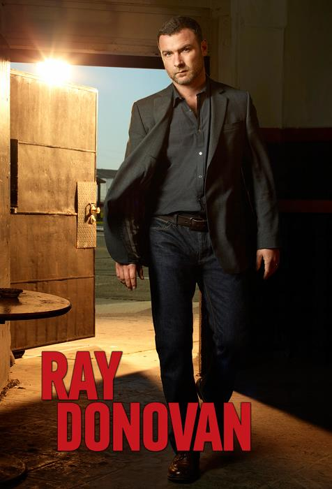
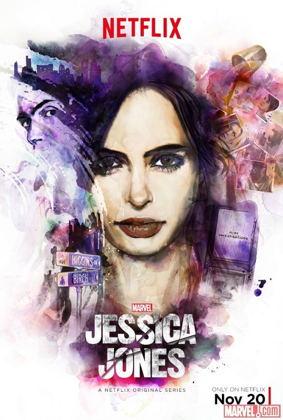
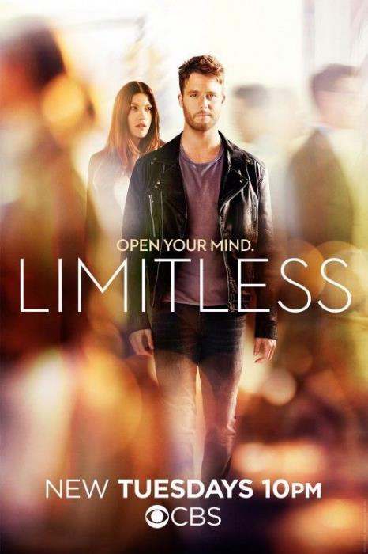
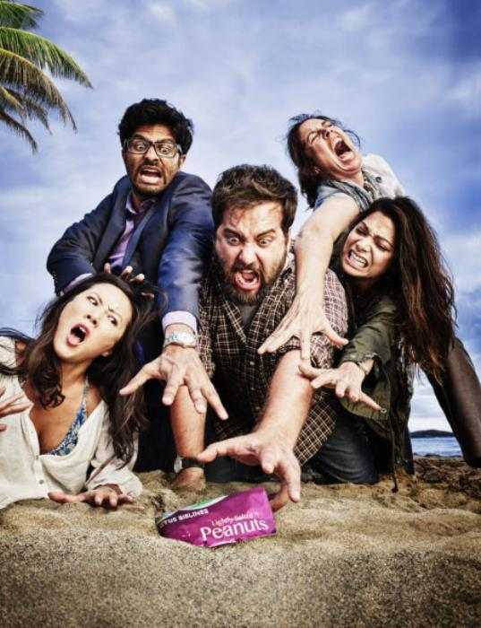
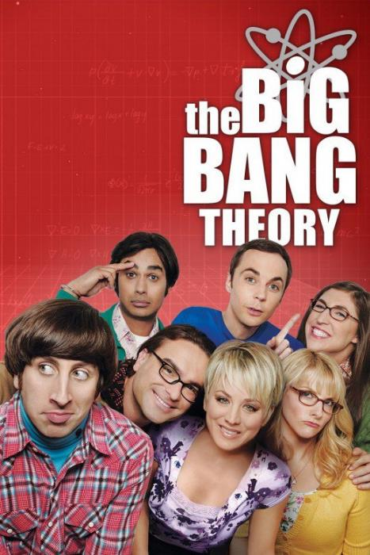
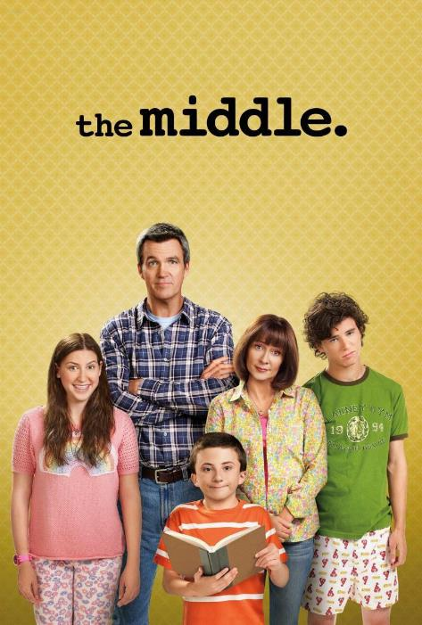
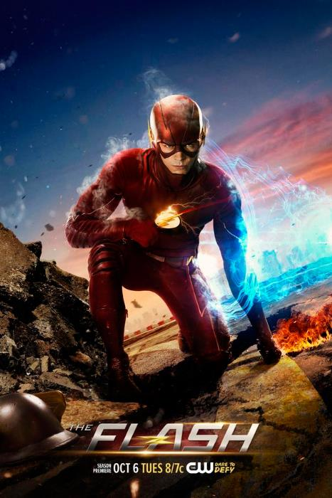
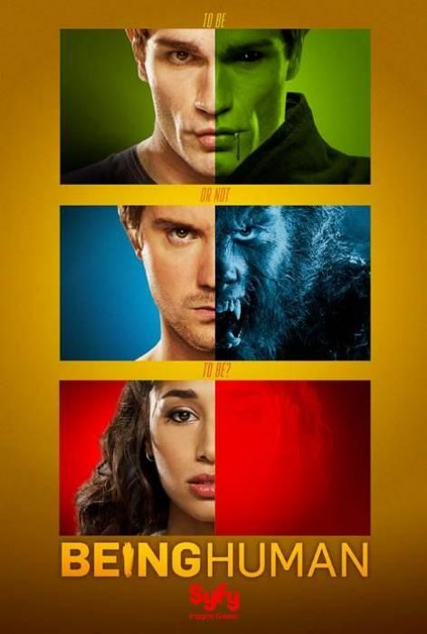
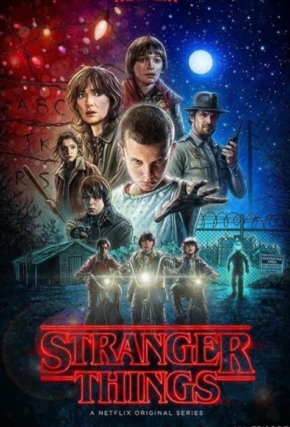

Action series
Drama series
Comedy series
Science-fiction series
Join us
Back to top
SIGN IN
Best action series



Drama series
Latest comedy series



Latest sci-fi series



See what’s next.
WATCH ANYWHERE. CANCEL ANYTIME.
JOIN FREE FOR A MONTH